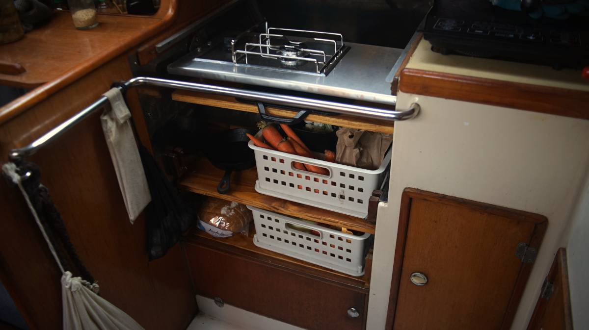
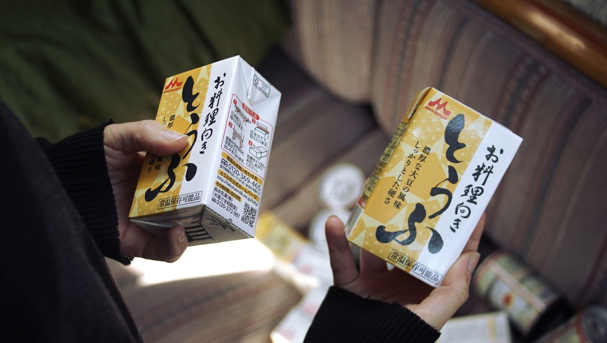

refrigeration
Refrigeration is a modern convenience we choose to do without, we prefer to limit the use of energy-guzzling devices and to educate ourselves on proper storage of ingredients. Note that we follow a plantbased diet so we cannot advise on storing animal products without a fridge, this section focuses on keeping condiments and fresh produce.
The refrigerated cold chain played a huge role in reshaping the geography of food, removing the constraints of season, climate, and proximity in favour of monocultural economies of scale, astronomical food mileage, and permanent global summertime.Nicola Twilley
General tips:
- Buy veg and fruit without bruises (they last longer)
- Mist summer veg and fruit with water on occasion.
- Wax the stems of aubergines, grapes and melons.
- Buy never-refrigerated veggies whenever possible.
- Eat items with a shorter shelf life first.
- Buy in-season produce.
- Separate foods that release ethylene from those sensitive to it.
- Never wash berries until just before use.
We look at our inventory of fresh foods daily, and eat items with a shorter shelf life first, like fresh herbs and greens. Then, we move on to tomatoes, eggplants, and onto carrots and beets. In the end, we're usually left with onions, garlic, cabbage, potatoes and pumpkins. Potatoes and onions will last months if kept in a dark dry place, and some fruit will last a while if wrapped in towels, foil or newspapers.
To read more about keeping fresh produce without a fridge, read the article Food Storage Beyond the Refrigerator by Low Tech Labs, they go in-depth on how to store everything. We use this as a reference for storing our produce. See our open pantry(pictured above).
Condiments like soy sauce, vinegar and mustard will keep well outside the fridge, but keep them in a dark cool place to preserve their flavor. If exposed to high heat and moisture for long periods they can spoil, but the color, flavor and odor will change. Maple syrup, soymilk, ketchup/salsa, and jam will also keep for many weeks outside of the fridge if kept away from light in a cool place, but will rot fast if the temperature is too warm.
In the winter, we store perishables in the insulated space under our sink(under the waterline). We built a small shelf to make storage possible. We keep items in this space in the summer as well, but we have to go through them faster.
What we buy in the winter varies from what we buy for the summer. For example, in the winter we buy soymilk in 1.89 L cartons, but in the summer we must buy smaller 946 ml cartons. The smaller cartons cost more, but larger amounts will spoil, and then we're not saving money. In the winter we eat fresh kale, but buy kale powder to incorporate into meals in the summer. Some nutrition is lost when the kale is dried, but it is still a good source of nutrients[Source], especially when no fresh kale is available.
Tofu is very temperature sensitive, we usually try and eat them up within 2 days. We store the leftover block in water in a closed bowl and keep it under the sink. Tetra-pak tofu is shelf stable keeps for many months, but requires the same treatment as regular-packed tofu once opened. When sailing in Japan we loved buying kouya-doufu(高野豆腐), a type of freeze-dried tofu that resembles a hard sponge which you must re-hydratefor 5 minutes, and then firmly press before using. Because kouya-doufu is dry it is very light to store(no water weight), and keeps for a long, long time.
Relying on the selection of local and seasonal produce from farmer's markets makes us discover new ingredients, while it encourages local vendors, and cuts down on emissions from transport. Alternatively, making preserves and ferments (see lactofermentation) allows us to enjoy some foods out of their season. In New Zealand, a friend once gave us feijoas that we processed into chutney which we had the following year.
When spending a long time away from shore, you may run out of both fresh and fermented vegetables, in such cases sprouting is an essential habit to pick up. Just a few tablespoons of moistened dried mung beans, brown lentils, fenugreek and/or radish seeds will sprout and fill a jar within 3 days. We buy the beans/legumes and seeds in bulk and mix them up in a smaller jar to use for sprouting(read our detailed guide on sprouting).
We eat leftovers the next day, incorporating them into other meals to offer some variety. Preparing food in the pressure cooker, and letting it rest unopened will help preserve the food. If left overnight, reheat it in the morning, it will keep well until lunchtime.
Read the anti-fridge and Save Food From the Fridge.